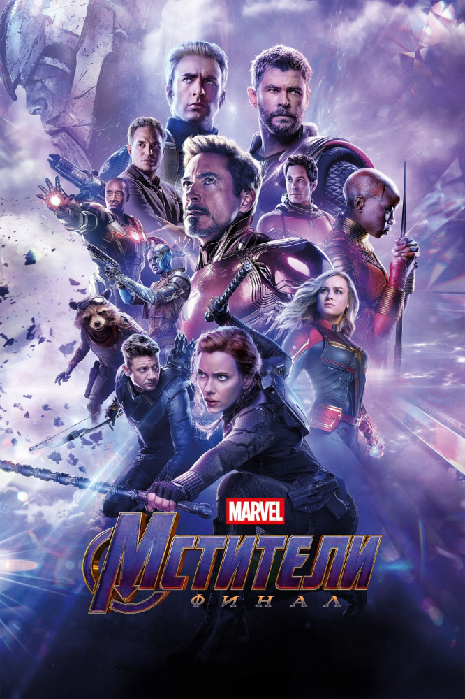
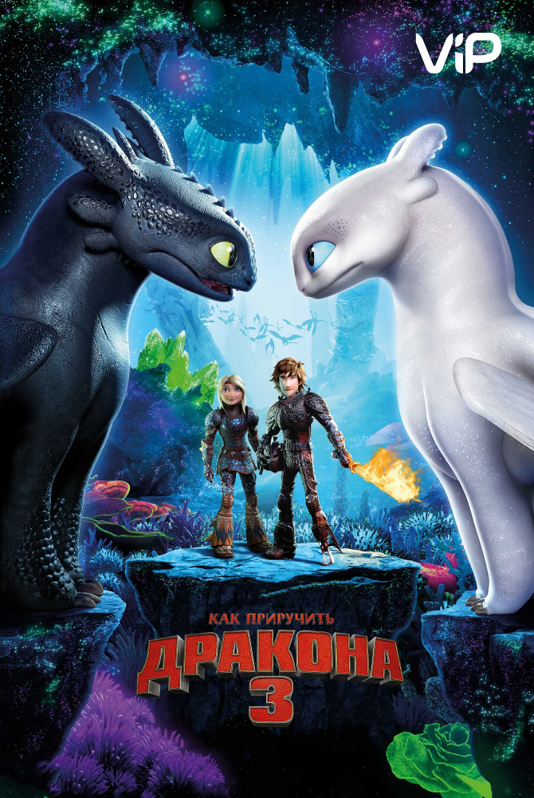
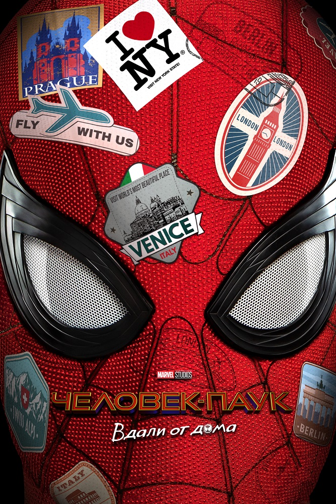
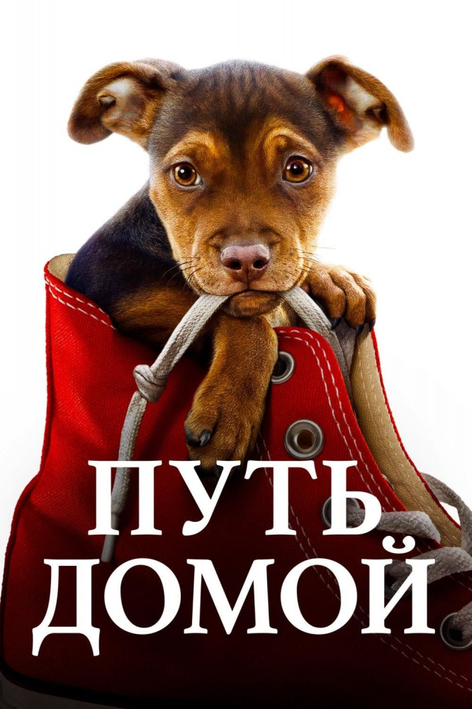

|
Джокер
|

|
Готэм, начало 1980-х годов. Комик Артур Флек живет с больной матерью, которая с детства учит его «ходить с улыбкой». Пытаясь нести в мир хорошее и дарить людям радость,
Артур сталкивается с человеческой жестокостью и постепенно приходит к выводу, что этот мир получит от него не добрую улыбку, а ухмылку злодея Джокера.
|
режиссер Тодд Филлипс
сценарий Тодд Филлипс, Скотт Сильвер, Боб Кейн, ...
продюсер Брэдли Купер, Тодд Филлипс, Эмма Тиллинджер Коскофф, ...
оператор Лоуренс Шер
композитор Хильдур Гуднадоттир
художник Марк Фридберг, Лора Боллинджер, Марк Бриджес, ...
монтаж Джефф Грот
|
|
Мстители: Финал
|

|
Оставшиеся в живых члены команды Мстителей и их союзники должны разработать новый план, который поможет противостоять разрушительным действиям могущественного титана Таноса.
После наиболее масштабной и трагической битвы в истории они не могут допустить ошибку.
|
режиссер Энтони Руссо, Джо Руссо
сценарий Кристофер Маркус, Стивен МакФили, Стэн Ли, ...
продюсер Кевин Файги, Виктория Алонсо, Митчелл Белл, ...
оператор Трент Опалок
композитор Алан Сильвестри
художник Чарльз Вуд, Джулиан Эшби, Джим Барр, ...
монтаж Джеффри Форд, Мэттью Шмидт
|
|
Как приручить дракона 3
|

|
Когда-то викинги жили в гармонии с драконами. В те времена они делили радость, горе… и последние штаны. Казалось, что так будет всегда, но появление загадочной Дневной Фурии изменило жизнь острова.
И теперь Иккинг и Беззубик столкнутся с безжалостным охотником на драконов, жаждущим уничтожить все, что им дорого.
|
режиссер Дин ДеБлуа
сценарий Дин ДеБлуа, Крессида Коуэлл
продюсер Бонни Арнольд, Брэд Льюис, Майкл А. Коннолли, ...
оператор Джил Циммерман
композитор Джон Пауэлл
художник Пьер-Оливье Винсент
монтаж Джон К. Карр
|
|
Человек-паук: Вдали от дома
|

|
Питер Паркер вместе с одноклассниками отправляется на летние каникулы в Европу. Однако отдохнуть приятелям вряд ли удастся — по прибытии в Венецию группа попадет в эпицентр сражения.
Некое существо, состоящее из воды, появляется из ниоткуда и начинает крушить всё на своём пути, и теперь Питеру придётся спасать европейские архитектурные памятники вместе с загадочным супергероем Мистерио.
|
режиссер Джон Уоттс
сценарий Крис МакКенна, Эрик Соммерс, Стэн Ли, ...
продюсер Кевин Файги, Эми Паскаль, Виктория Алонсо, ...
оператор Мэттью Дж. Ллойд
композитор Майкл Джаккино
художник Клод Паре, Грант Армстронг, Чарли Бил, ...
монтаж Ли Фолсом, Дэн Лебентал
|
|
Путь домой
|

|
Что делать, если тебя и твоего любимого хозяина разделяют сотни километров? Белла знает ответ: она обязательно вернется домой, чего бы ей это ни стоило. И путь ее будет полон невероятных приключений, опасностей и удивительных открытий.
|
режиссер Чарльз Мартин Смит
сценарий Брюс Кэмерон, Катрин Мишон
продюсер Брюс Кэмерон, Джеффри Чан, Роберт Дж. Дорманн, ...
оператор Питер Мензиес мл.
композитор Майкл Дэнна
художник Эрик Фрайзер, Ракель Роупер, Моника Прудом, ...
монтаж Дэвид С. Кларк, Дебра Нил Фишер, Сабрина Плиско
|